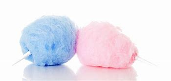

How to Make Cotton Candy
Introduction
Cotton candy is a spun sugar confection that resembles cotton. It is made by heating and liquefying sugar, and spinning it centrifugally through minute holes, causing it to rapidly cool and re-solidify into fine strands.
Ingredients
- 2 cups sugar
- ½ cups corn syrup
- a pinch of salt
- Water
- 1 teaspoon raspberry extract (interchangeable flavors)
- 1 teaspoon cornstarch
- lollipop sticks or sticks
Instructions
- Combine sugar, corn syrup, water and salt in a large saucepan
- Heat the mixture to 320°F (160°C)
- Line parchment over your counter
- Spin the sugar (cotton candy machine)
- Wrap the cotton candy around lollipop sticks or just sticks
- EAT!
